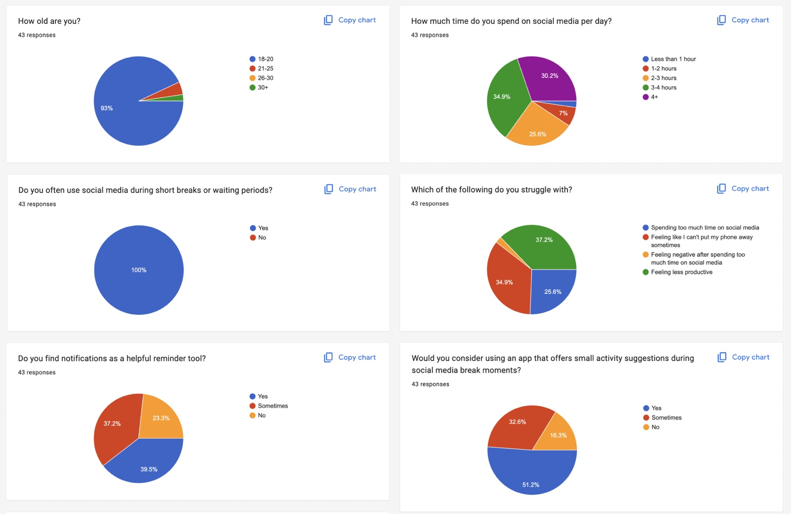
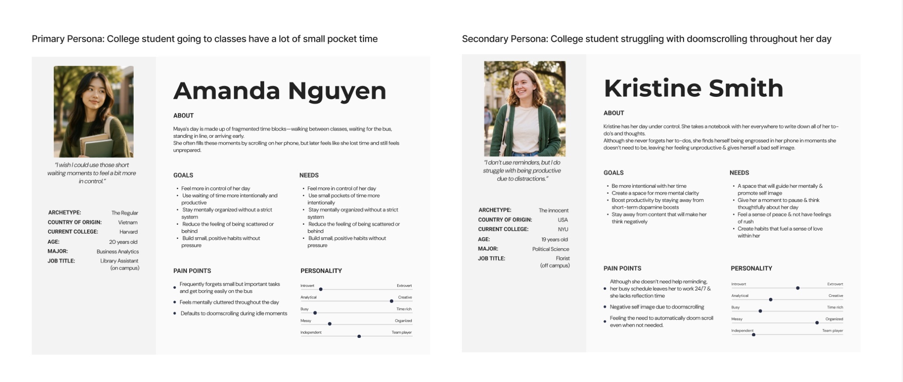
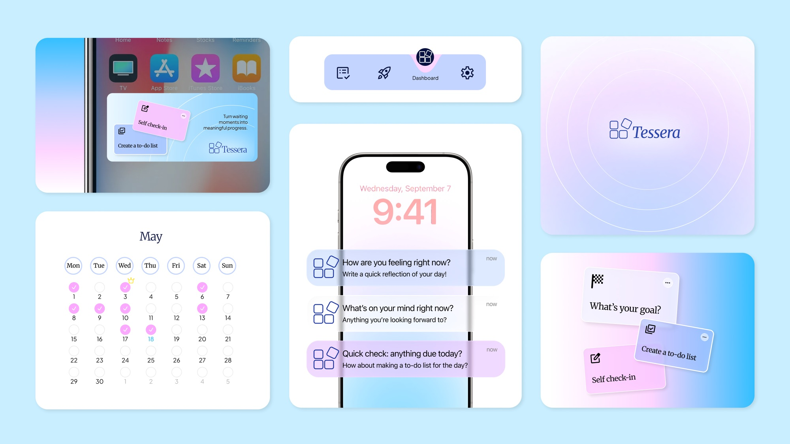
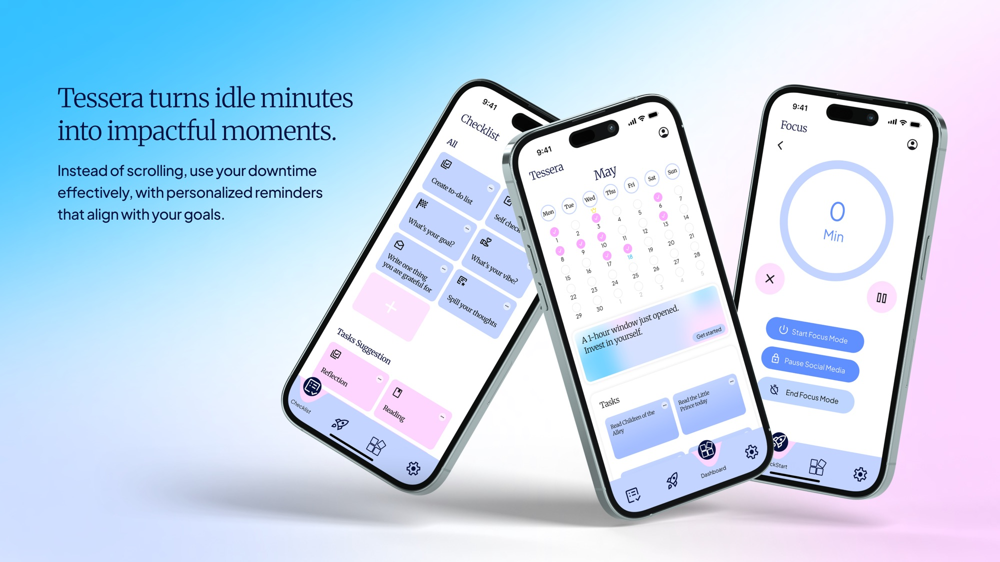
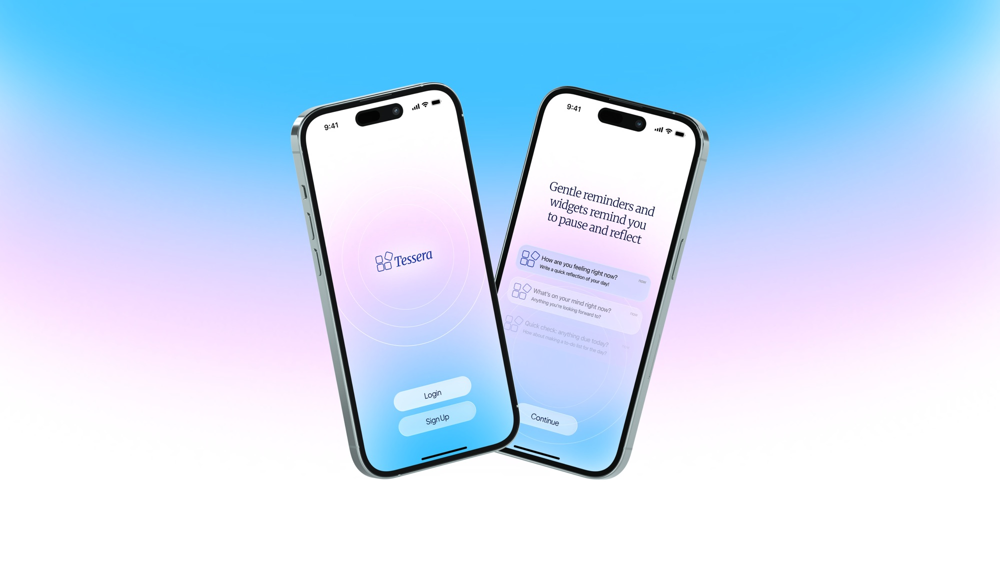
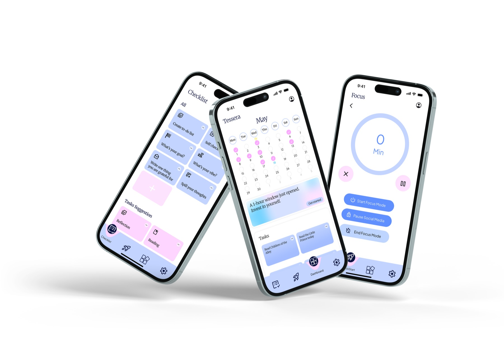

2026
Tessera
A productivity app for the minutes you spend waiting.

- Role
- UX designer, team of four
- Event
- Cornell Design-A-Thon, April 2026, two days
- Team
- Cherry Phan, Anna Vorontsova, Steven Yanzhi Chen
- Platform
- iPhone and Apple Watch
Problem
The minutes in between
A lot of the day is waiting: for the bus, in line, between classes or meetings. Those few minutes usually go to social media because it is the closest thing to hand.
We wanted to offer something else at that exact moment, small enough to finish before the bus shows up.
Research
Everyone reaches for their phone
The theme was reimagining everyday life. We started by walking through our own days and noticed how much of them we spend waiting.
We read more than 10 studies on doomscrolling and phone use, collected 43 survey responses, and ran 12 interviews in about five hours. Every person who took the survey said they use social media during short breaks. In interviews, people told us they pick up their phone automatically and often feel guilty afterward.
Three things came out of it:
- Waiting moments happen all day, and nothing is planned for them.
- People reach for their phone in those moments without even thinking or realizing it.
- People want a better way to spend that time. About half of the people we surveyed said they would use an app that suggests something small to do.


Solution
A nudge when you are idle
Tessera uses screen time patterns, device inactivity, location, and biometrics like heart rate from an Apple Watch to detect when you are waiting. Then it suggests one small thing as a notification: jot down a reminder, start a to-do list, or check in on your mood.
- QuickStart. Cards that open straight into a goal, a to-do list, or a self check-in.
- Lock screen and widget. The nudge shows up where you would have reached for another app.
- Calendar. Shows the open windows in your day and what you did with them.
- Focus mode. A timer for when the window turns out to be longer than you thought.




My role
Four friends, two days
We entered as four friends, all UX students, and the whole thing came together in about two days.
We went from research to personas and a sitemap, then from low-fidelity wireframes to a high-fidelity prototype in Figma. At the end we tested the prototype with people. They found their way around without trouble and liked the idea.
The hardest part was the beginning. We went through several ideas before this one, and it took a while to agree on which features mattered. The name came from that stage too. A tessera is one small tile in a mosaic.